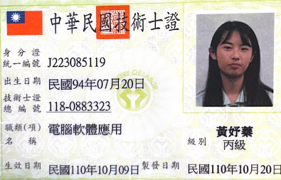
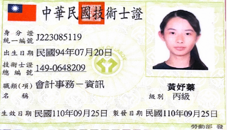
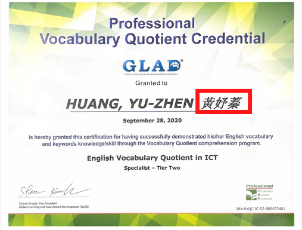
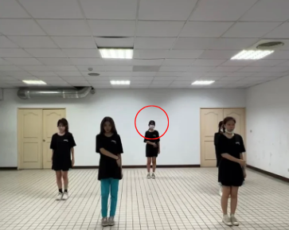
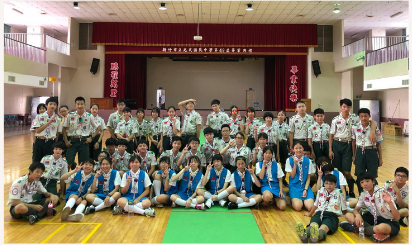
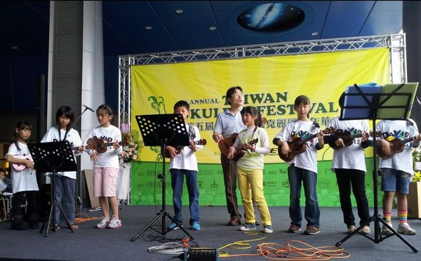
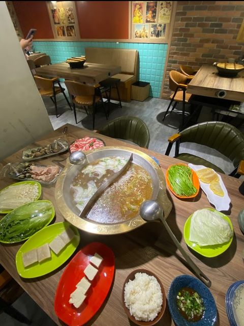
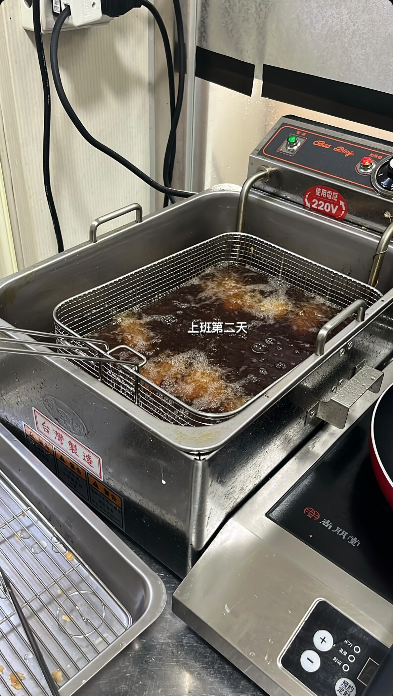

My Skills
我的證照 | My Certificate

電腦軟體丙級證照

會計資訊丙級證照

PVQC專業英文詞彙能力

TQC-PPT2016 專業級
程式能力 | Programming Skills

Python

Java

Html

Css
My Experiences
我的經驗 | My Experience

當時會參加熱舞社是因為我本來是一個害怕嘗試的人，決定要改變自我，才選擇熱舞社，那時候的我差一點當上幹部，但因為課業問題沒辦法當上，這是我最大的遺憾，但我不會放棄跳舞的！

國中時期參加童軍團，童軍團其實要考很多考試，例如初考、中考、高考......等，考試期間必須展現你的熱情要賣力地喊口號，還要記住每個求生技巧，才能通過考試。並且我還參加許多服務活動，當時幫助人家時看到他們臉上的表情是開心的，疲勞直接沒了

小時候學了3年的烏克麗麗，從本來音階甚麼都不會，到最後是可以看到那個音直接彈出來，並且還出去比賽，這張照片就是我跟我們班出去比賽的照片，但我上了高中就沒有再碰過烏克麗麗了，蠻可惜的。
我的打工經驗 | My Working Experience

新竹巨城附近的韋爐火鍋作外場，剛進去時，我蠻容易出包的，但我回家的時候都在練習記菜單要如何介紹，還有如何用訂位的系統，後面才慢慢熟悉能自己控制住外場，且在外場學到要隨時保持笑容，不能把疲憊拿出來。

一間麻將館旁的炸物店，那間店要學會自己煮飯和炸東西，我那時候都是照著老闆的步驟一步一步把菜做出來，當下覺得自己廚藝都進步很多，那時候老闆很放心我讓我顧整間店！